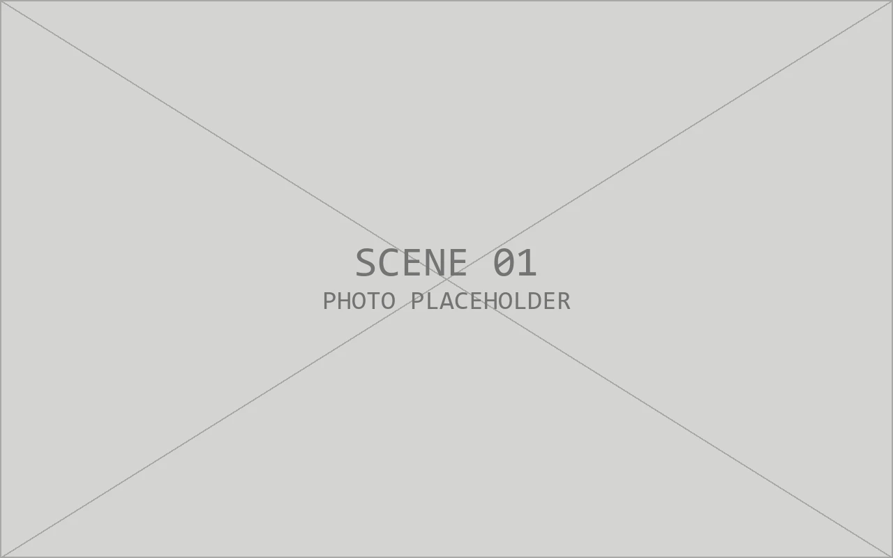
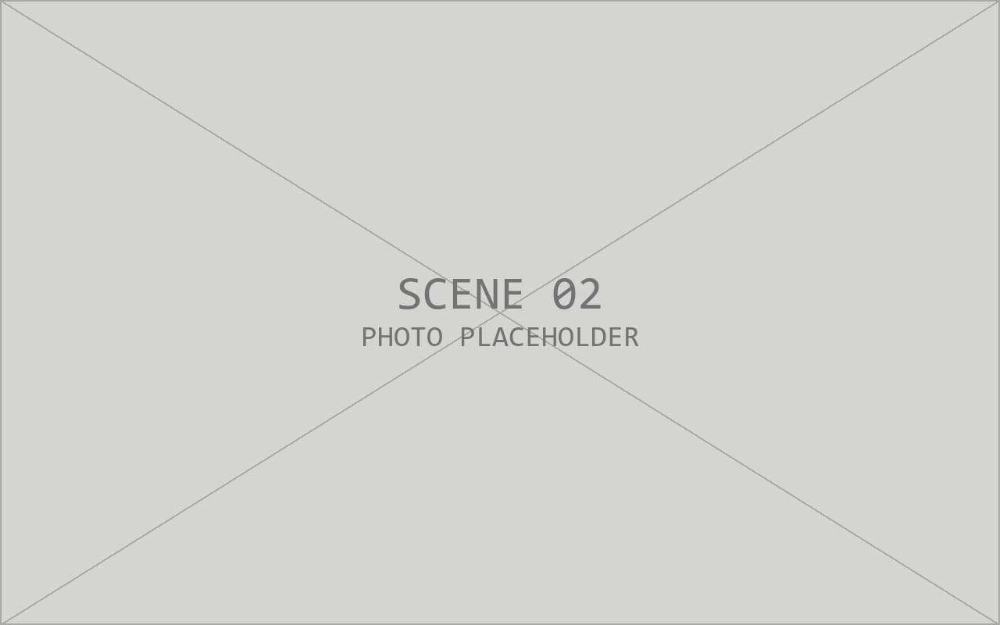
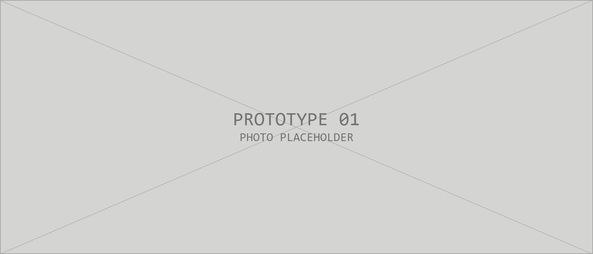

2026.07 — 09
某医药健康企业
设备工程师实习 · 医药健康 / 药品与健康食品研发制造
- 依据设备运行逻辑参与编写 SOP，规范产线操作流程。
- 参与产线机器调整、维修与设备调试，协助保障稳定运行。
- 参与 PLC 程序编写与运行调试，配合现场确认动作逻辑。
KEY FACTS / 01
FIELD EXPERIENCE / 2025—2026
两段实习让我分别接触结构图纸与产线设备，建立从设计交付到运行维护的初步经验。

2026.07 — 09
设备工程师实习 · 医药健康 / 药品与健康食品研发制造

2025.12 — 2026.06
结构工程师实习 · 特种车辆 / 车载通信系统与方舱
PROCESS / 02
SELECTED WORK / 03

基于切削与超声波协同的水平去尾清洗一体机
针对加工中清洗、定位和去尾分散的问题，团队设计一套连续化处理方案：清洗舱完成浸洗，输送与定位机构将物料送至切削工位，再由刀片完成去尾。样机采用型材机架与透明防护，便于观察机构动作和开展调试。
01功能分解 — 清洗、移送、切削分模块，减少工序间的人工搬运。
02机构协同 — 围绕滚筒、刀片与推送机构梳理动作节拍和空间关系。
03样机迭代 — 结合装配与实物观察持续检查可达性、干涉和维护空间。
机械结构、电控、仿真和样机工作由团队分工协作完成；本页只呈现项目整体方案与样机，不将团队成果表述为个人独立完成。
TOOLS & APPROACH / 04
先理解工况和功能，再拆分机构、核对图纸表达，并在装配与调试反馈中继续修正方案。
SolidWorks · Creo · CATIA · UG
AutoCAD · 中望 CAD · 零件图与装配图
KeyShot 渲染 · Office / WPS 文档协作
机械原理 · 公差配合 · 标准件选型 · 制造工艺
ABOUT / SELF EVALUATION
我习惯先理解工况和动作，再把功能拆解为结构与图纸；遇到装配或调试反馈时，也愿意回到方案中继续修正。实习和团队样机项目让我逐渐认识到，机械设计需要同时考虑制造、操作与维护。作为应届生，我还在积累工程经验，希望从扎实的设计与设备工作做起，持续提升解决实际问题的能力。
CLOSING / 05
期待在真实的工程问题中继续学习与成长。
从三维建模与图纸表达，到产线设备调试与 SOP 编写。
以负责人身份与团队完成项目从方案到样机的验证。
从扎实的设计与设备工作做起，持续提升解决实际问题的能力。